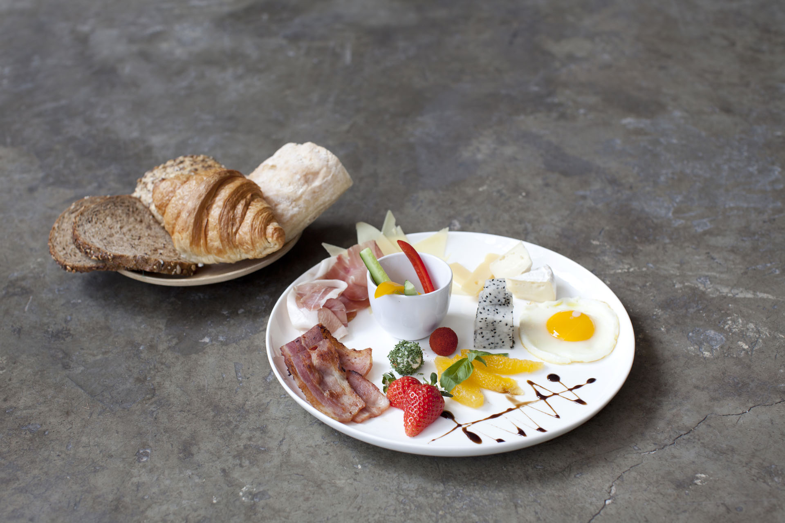

Zarah is a cafe, restaurant, event space, lounge, and art gallery in the centre of Beijing. Come by for a perfect coffee, authentic north european breakfast, as well as delicious lunch and dinner offerings with inspirations from european and chinese cuisine. Zarah is located in a beautiful old Beijing style courtyard house renovated with steel and concrete elements. Our outside courtyard and the terrace invites for a warm summer evening to sit and enjoy. With regular (photo) exhibitions, music and other cultural events we are a platform for art and culture between Europe and Asia. Start your day with a breakfast in our garden, enjoy an afternoon with coffee and cake, watch the sunset with a glass of wine on our roof top terrace and end your day with a tasty cocktail at the bar.
Zarah是一家位于北京市中心的咖啡馆，活 动空间，酒吧及艺术画廊。Zarah提供了一个宽敞灵性的场所，让顾客 能够在此品尝咖啡，享受中西餐式餐点，与 朋友聚会，思考，创作，工作，娱乐，聊天，交流。可以在我们的院子里享用早餐，开始崭新的一 天;下午的时候，品尝咖啡和蛋糕;傍晚来临之 际，在我们的露台喝着葡萄酒欣赏日落;最后在 吧台来一杯美味的调酒，结束一天。
Zarah is a cafe, restaurant, event space, lounge, and art gallery in the centre of Beijing. Come by for a perfect coffee, authentic north european breakfast, as well as delicious lunch and dinner offerings with inspirations from european and chinese cuisine. Zarah is located in a beautiful old Beijing style courtyard house renovated with steel and concrete elements. Our outside courtyard and the terrace invites for a warm summer evening to sit and enjoy. With regular (photo) exhibitions, music and other cultural events we are a platform for art and culture between Europe and Asia. Start your day with a breakfast in our garden, enjoy an afternoon with coffee and cake, watch the sunset with a glass of wine on our roof top terrace and end your day with a tasty cocktail at the bar.
Zarah是一家位于北京市中心的咖啡馆，活 动空间，酒吧及艺术画廊。Zarah提供了一个宽敞灵性的场所，让顾客 能够在此品尝咖啡，享受中西餐式餐点，与 朋友聚会，思考，创作，工作，娱乐，聊天，交流。可以在我们的院子里享用早餐，开始崭新的一 天;下午的时候，品尝咖啡和蛋糕;傍晚来临之 际，在我们的露台喝着葡萄酒欣赏日落;最后在 吧台来一杯美味的调酒，结束一天。
Zarah is a cafe, restaurant, event space, lounge, and art gallery in the centre of Beijing. Come by for a perfect coffee, authentic north european breakfast, as well as delicious lunch and dinner offerings with inspirations from european and chinese cuisine. Zarah is located in a beautiful old Beijing style courtyard house renovated with steel and concrete elements. Our outside courtyard and the terrace invites for a warm summer evening to sit and enjoy. With regular (photo) exhibitions, music and other cultural events we are a platform for art and culture between Europe and Asia. Start your day with a breakfast in our garden, enjoy an afternoon with coffee and cake, watch the sunset with a glass of wine on our roof top terrace and end your day with a tasty cocktail at the bar.
Zarah是一家位于北京市中心的咖啡馆，活 动空间，酒吧及艺术画廊。Zarah提供了一个宽敞灵性的场所，让顾客 能够在此品尝咖啡，享受中西餐式餐点，与 朋友聚会，思考，创作，工作，娱乐，聊天，交流。可以在我们的院子里享用早餐，开始崭新的一 天;下午的时候，品尝咖啡和蛋糕;傍晚来临之 际，在我们的露台喝着葡萄酒欣赏日落;最后在 吧台来一杯美味的调酒，结束一天。

Zarah is a cafe, restaurant, event space, lounge, and art gallery in the centre of Beijing. Come by for a perfect coffee, authentic north european breakfast, as well as delicious lunch and dinner offerings with inspirations from european and chinese cuisine. Zarah is located in a beautiful old Beijing style courtyard house renovated with steel and concrete elements. Our outside courtyard and the terrace invites for a warm summer evening to sit and enjoy. With regular (photo) exhibitions, music and other cultural events we are a platform for art and culture between Europe and Asia. Start your day with a breakfast in our garden, enjoy an afternoon with coffee and cake, watch the sunset with a glass of wine on our roof top terrace and end your day with a tasty cocktail at the bar.
Zarah是一家位于北京市中心的咖啡馆，活 动空间，酒吧及艺术画廊。Zarah提供了一个宽敞灵性的场所，让顾客 能够在此品尝咖啡，享受中西餐式餐点，与 朋友聚会，思考，创作，工作，娱乐，聊天，交流。可以在我们的院子里享用早餐，开始崭新的一 天;下午的时候，品尝咖啡和蛋糕;傍晚来临之 际，在我们的露台喝着葡萄酒欣赏日落;最后在 吧台来一杯美味的调酒，结束一天。
Zarah’s venue – a beautiful old Beijing style courtyard house renovated with steel and concrete elements – consists of ve areas which can be booked individually or together for private and corporate events. We regularly hold weddings, birthday and farewell parties, corporate product launches, team meetings, company BBQ parties, colleague reunions and other great events. Please contact us with your ideas and we will be very happy to organize your event for you.
Zarah的场地是一个美丽的老北京四合 院，用钢筋，混凝土翻修过的场地-共包含5 个空间，每一个场地都可以单独预定或者一 起预定举办私人活动或者公司活动。我们通 常举办婚礼，生日派对，告别派对，公司产品 发布，团队会议，公司烧烤聚会，同事聚会和 一些其他的活动。如果你想在Zarah举办活 动，请与我们联系，我们将非常乐意为你组 织安排你的活动。
ZarahGuloudongdajie No.46Dongcheng District100009 Beijing +86-(0)10 - 84039807 info@cafezarah.com
ZarahGuloudongdajie No.46, Dongcheng District, 100009 Beijing, +86-(0)10 - 84039807 info@cafezarah.com
Opening hours 营业时间 Son – Thu 周日至周四 10am – 11pmFri + Sat 周五和周六 10am – 1am
Enquiries 咨询 To enquire about a private event or make a reservation please call or send us an email!